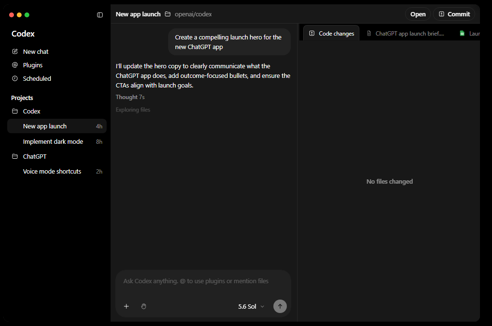

為了讓上課當天可以直接動手做，麻煩在開課前先把下面六項準備好。建議預留 45～60 分鐘；系統工具下載較久時，請提早準備。
⓪ 準備 ChatGPT Plus（或以上），配合本課實作
① 下載安裝 ChatGPT 桌面 App 並用同一個帳號登入
② 準備好一份自己的題庫
③ 申請一組 GitHub 帳號
④ 安裝 Git，讓 AI 能幫作品存版本
⑤ 讓電腦「登入」你的 GitHub（裝 gh）
使用 → 或 空白鍵 切換下一頁
這堂課使用 ChatGPT 桌面版做程式與圖像實作，請準備 ChatGPT Plus（或以上）。這是本課的準備要求；免費方案能用哪些功能，仍以官方當前開放為準。
🤖 ChatGPT Plus 本課必備
US$20 / 月，實際結帳金額以官方頁面為準。
桌面 App 請登入已訂閱的同一個 ChatGPT 帳號，避免誤用另一個免費帳號。
chatgpt.com/pricing💡 只上一堂課划算嗎？
可先訂一個月，之後要不要續訂由你決定。已使用 Pro、Business 或 Edu 等方案者，先確認課堂功能與使用額度即可，不必另訂一份 Plus。
當天有兩台裝置會輕鬆很多：
📱 一台平板或手機：看老師上課畫面、簡報
💻 一台電腦：自己跟著操作（Windows 或 Mac 都可以）
只有一台電腦也可以上，但需要在「看講解」和「做練習」之間頻繁切換，會比較手忙腳亂。
課程使用 ChatGPT 桌面版：你用中文說明目標，它就能在你選定的專案中協助建檔、寫程式與製作圖片，完成後一起檢查作品。
⚠️ 兩個重點
1. 選擇 Windows 或 macOS，確認官方列出的系統與裝置需求再安裝。
2. 登入時用你剛訂閱的 ChatGPT 帳號登入，不用另外註冊。
官方安裝與操作說明：ChatGPT 桌面版入門
找到 下載區塊，選你電腦對應的版本：
🪟 Windows ／ 🍎 macOS；可用版本與需求依官方頁面為準。
Mac 可在「蘋果選單 → 關於這台 Mac」查看晶片與系統版本，再對照下載頁。
依官方頁面進入應用程式商店或下載安裝檔，完成 ChatGPT 桌面 App 安裝。
打開 ChatGPT → 選擇登入（Sign in） → 使用你已訂閱的 ChatGPT 帳號
看到主畫面（中間一個可以打字的對話框）就完成了 ✓

↑ ChatGPT 桌面版中的 Codex 程式模式。App 名稱是 ChatGPT；課堂做程式時，從模式選單選 Codex。
若無法安裝或登入，請截下錯誤訊息並附上 Windows／macOS 版本，到課程群組提問。
課堂後半段要把你的題庫變成遊戲。上課前只要準備好題目和答案，帶著原始檔案來就可以。沒有題庫等於沒有彈藥 ⚠️
✅ 題型：選擇題（四選一）
每題一個題幹 + 四個選項（A/B/C/D）
✅ 一定要附正確答案
沒有答案，遊戲沒辦法判斷對錯
📦 數量
至少 20 題，建議 20～30 題，供課堂打怪遊戲使用
📄 格式不拘
Word / PDF / 純文字 / 拍照都行
🎉 準備到這裡就完成了！
不用先整理成表格，也不用轉檔或發布網址；上課時把題庫交給 ChatGPT 桌面版就好。
GitHub 是全世界工程師存放程式碼的地方，課程中我們會用它來備份、分享、把你的作品發布成一條網址給學生玩。免費。
已經有帳號的同學可以跳過這一步 🎉
輸入 Email（建議用常用的）、設定 密碼 和 使用者名稱（username）
完成驗證（拼圖小遊戲）→ 收信點驗證連結
登入後看到自己的首頁就完成了 ✓
💡 小提醒：username 之後不容易改，建議用英文 + 好記的名字（例如 abby-teacher、victor-edu）。
Git 會記錄你存下的修改版本，方便比較前後差異、回到先前的內容。本課由 AI 協助操作，你不用背指令，也不必另外安裝圖形介面工具。
這三個名稱各做一件事
Git：在電腦裡記錄作品版本。GitHub：線上存放與分享作品。gh：讓 AI 用指令操作 GitHub；下一個任務才安裝。
安裝完 Git 不會自動保存所有修改；要請 AI 建立版本紀錄（commit）。只存在電腦的版本，也還不是雲端備份。
請跟著自己的系統操作。已經裝過的人，也請完成最後的「AI 實際存版本」檢查。
先到「設定 → 系統 → 關於 → 系統類型」查看電腦架構。
x64 型處理器：點最上方 Click here to download／點擊此處下載，或 Git for Windows/x64 Setup。
ARM 型處理器：選 Git for Windows/ARM64 Setup。
本課選 Setup 安裝版；不要選 Portable、Source code 或其他作業系統。32 位元 Windows／較舊系統請先到群組確認相容性。
等下載完成，在「下載」資料夾開啟 Git-…-64-bit.exe 或 Git-…-arm64.exe。
版本號會更新，不必與教材示例一模一樣。若跳出 Windows 權限確認，核對是剛下載的 Git 安裝程式；需要管理員密碼時，由本人或設備管理者輸入。
看到授權說明後按 Next。安裝路徑與元件先保留預設；以下選項請特別確認。不同版本可能多一頁或少一頁，依畫面標題找。
新手可選 Use Notepad as Git's default editor。有裝 VS Code 且熟悉的人也可選它；不要選尚未安裝的編輯器。這是填寫文字時用的工具。
選 Git from the command line and also from 3rd-party software。
這樣 PowerShell 和 AI 使用的終端機才找得到 Git。不要只選 Git Bash；也不需要把所有 Unix 工具都加進 PATH。
可選 Override the default branch name，填 main。這只影響日後新建的專案；原有專案不會被改名。
SSH 使用內建 OpenSSH；HTTPS 保留安裝器的預設；換行選 Checkout Windows-style, commit Unix-style line endings。終端機、pull 行為與額外功能保留預設，Git Credential Manager 維持啟用，不用開啟額外實驗功能。
按 Install，等完成後按 Finish。可以取消 Launch Git Bash 和 View Release Notes；Git 沒有跳出主視窗是正常的。
官方步驟參考：GitHub 的 Git for Windows 安裝導覽
若安裝器顯示檔案正在使用：先保存工作，關閉正在使用 Git 的 App／終端機，再重試。已安裝的人重跑會是更新／重新安裝，不是首次安裝。
先完全關閉舊 PowerShell、終端機與 ChatGPT 桌面 App，再重新開啟。在開始選單搜尋 PowerShell，輸入：
git --version
看到 git version 2.… 代表這個終端機已能使用 Git。數字不必與老師一樣；接著做下一頁的 AI 實際檢查。
① 確認安裝器已到 Finish。② 關掉舊視窗，從開始選單重開 PowerShell。③ 在新視窗輸入 where.exe git，應顯示 Git 路徑。仍找不到時，重新執行官方安裝器，確認 PATH 選項為「Git from the command line and also from 3rd-party software」；完成後重開 App，必要時重新啟動電腦。先不要自己刪改整段 PATH。
AI 的 App 可能在安裝前就已開啟，尚未讀到新的環境。保存工作後完全結束並重新開啟 App，再請 AI 執行 git --version 並回報實際路徑。仍失敗時，把 PowerShell 的結果和 AI 錯誤一起貼到群組；兩邊可能在不同執行環境，不要反覆安裝多份。
先取消，確認下載起點是本教材的 Git 官方頁，而不是廣告或陌生附件。可在安裝檔「內容 → 數位簽章」檢查簽章是否有效。不確定時截圖詢問；學校／公司電腦請管理者協助。不要為了安裝關閉防毒或解除組織限制。
由有權限的本人或設備管理者協助。不要猜密碼，也不要把密碼傳到群組。沒有權限時先回報，讓老師安排設備或課堂協助，不必下載來路不明的免安裝包。
確認網路與磁碟剩餘空間，等下載完成再開檔。若檔案損壞，刪除的是「失敗的安裝檔」，再從官方頁重下載；不要刪已安裝的 Git 或作品資料夾。組織網路擋住 GitHub 時請管理者協助，改天或換允許的網路再試。
重新檢查「系統類型」：x64 與 ARM64 要選相符的 Setup；確認下載完整。32 位元或較舊 Windows 不要硬裝現在的版本，請附系統版本、系統類型與錯誤截圖到群組確認。
先保存進度並結束會用到 Git 的 App／終端機，再繼續安裝。若原本 git --version 已能正常顯示版本，本課不要求與老師同一版，直接做 AI 驗證即可；不必先卸載。
按 ⌘＋空白鍵，搜尋「終端機」並開啟，輸入：
git --version已有 git version …：可以往下完成 AI 檢查；顯示 Apple Git 也可以，不用追求與 Windows 相同的版本。
如果跳出安裝「Command Line Developer Tools／命令列開發者工具」的視窗，按安裝並同意授權。沒有跳出、也沒有版本號時，輸入：
xcode-select --install這組 Apple 工具包含 Git。本課只需要命令列工具，不用為了 Git 下載完整 Xcode。
保持網路連線與足夠空間，等系統顯示安裝完成。所需時間依網路與套件大小而異，不一定幾分鐘就結束。
如需密碼，由本人輸入 Mac 的登入密碼；若是在終端機輸入，沒有文字或星號回顯是正常的。輸入完按 Enter，不要把密碼貼給 AI 或群組。
關閉並重開終端機，再輸入：
git --version看到版本號後，完全結束並重開 ChatGPT 桌面 App，再完成後面的 AI 檢查。
官方說明：Git：macOS 安裝方式 · Apple：命令列工具
表示系統認為工具已安裝，不必一直重跑安裝指令。先用 git --version 驗證；若仍錯誤，檢查「系統設定 → 一般 → 軟體更新」有沒有命令列工具更新。
保持網路、電源與磁碟空間充足，先等系統完成；不要看到時間跳動就反覆關閉。若明確顯示失敗，記下完整錯誤，檢查網路後再試。安裝可能比 Windows 久，請提前準備。
先確認網路，並到「軟體更新」檢查與目前 macOS 相容的工具。若仍找不到，請附 macOS 版本與錯誤到群組；進階處理可以由老師依 Apple 官方下載頁選相容套件，別下載陌生網站的舊安裝檔。
可能是原有命令列工具需更新，或開發工具位置失效。先執行 xcode-select --install，若已安裝則檢查「軟體更新」，完成後重試 git --version。仍失敗時請老師協助診斷路徑；不要自行刪除系統開發工具資料夾，也不必為了排錯直接重裝整台電腦。
請設備管理者協助；不要分享登入密碼，也不要嘗試繞過管理限制。把系統版本和錯誤截圖傳到群組，老師會協助安排。
若 git --version 正常，本課可以直接使用。若 Homebrew 已正常運作但仍缺 Git，可用 brew install git 安裝後重開終端機；不要為了修 Git 同時重複裝好多套。Homebrew 本身有問題，留到下一個 gh 任務的說明處理。
完全結束並重新開啟 ChatGPT 桌面 App，再請 AI 在它實際使用的終端機執行 git --version。仍失敗，請一起提供終端機結果與 AI 錯誤；先確認兩者使用同一台電腦與環境。
看到版本號只是第一步。請在 ChatGPT 桌面版切到能操作專案的 Codex 程式模式，選一個練習用的資料夾，把下面這段貼給 AI：
請檢查你實際使用的環境能否執行 git --version，回報 Git 版本與執行檔路徑。
在我選定的資料夾內，另外建立一個全新的「Git安裝測試」子資料夾；若同名資料夾已存在，就使用新的名稱，不要覆蓋。
只在這個新子資料夾初始化 Git，新增一份寫著「第一版測試成功」的文字檔。
先確認 Git 的作者名稱與信箱是否已設定；缺少時先問我。若需補設定，只設定這個練習專案，不更動其他專案或全域設定。
將這一份文字檔建立第一個 commit，回報 commit 編號與 git status 的結果。
這次只做本機練習，不要上傳、不要刪除或修改其他資料夾。不能操作本機時，請直接說明原因，不要假裝完成。
完成標準：AI 回報 Git 版本與路徑、第一個 commit 編號，以及 nothing to commit, working tree clean（或相同意思）。這才表示它能在練習專案存版本。
Git 需要記錄這次版本的作者名稱與信箱；這不是要求 GitHub 密碼。回覆你願意放在版本紀錄中的名稱與信箱，請 AI 只在練習專案設定。若不想公開私人信箱，可登入 GitHub 的「Settings → Emails」，複製自己帳號顯示的 GitHub noreply 信箱；不要猜格式或填老師的信箱。
前者先請 AI 確認目前位置，進入剛建立的練習子資料夾並確認已初始化；不要把整個桌面或文件資料夾加入版本管理。後者先停止，請老師確認路徑與擁有者；不要套用「信任所有資料夾」的設定。
確認你在桌面版能操作專案的模式，並已選擇練習資料夾。一般純聊天或沒有本機工具的環境，無法替你實際安裝或建立版本。閱讀 App 顯示的權限要求，僅授權這次練習需要的範圍；仍卡住就截圖到群組。
先看完整錯誤：LF will be replaced by CRLF 通常是換行提醒，要再看 commit 是否成功；不是看到 warning 就重裝。若有鎖定檔錯誤，先確認是否還有 Git 程序執行，請 AI 或老師診斷，不要直接刪 .git 或鎖定檔。
卡關請附「作業系統版本、正在做哪一步、完整錯誤截圖」。不要傳密碼、驗證碼或 token。完成 Git 檢查後，再往下安裝 gh 並登入 GitHub。
查核依據：Git 初次設定 · GitHub 作者信箱
申請完帳號 還不夠。要讓 ChatGPT 桌面版之後能協助建立作品倉庫、上傳發布，必須先讓電腦也認識你的 GitHub 帳號。
做法：裝一個叫 gh（GitHub CLI）的工具，再用它登入一次。
這步做完，之後永遠不用再做。
👇 接下來請依照你的電腦選一條路走（點選下方按鈕直接跳轉）
打開終端機
按 ⌘+空白鍵 → 輸入「終端機」→ Enter
（或：應用程式 → 工具程式 → 終端機）
確認有沒有 Homebrew，輸入：
brew --version
✅ 看到 Homebrew 4.x.x → 翻下一頁（Step 3）
❌ 看到 command not found → 先裝 Homebrew，整段貼進去按 Enter：
/bin/bash -c "$(curl -fsSL https://raw.githubusercontent.com/Homebrew/install/HEAD/install.sh)"
🛑 重要：貼上後一定要看完這段再動手！
Homebrew 下載要 3~10 分鐘，跟一般安裝程式不同，終端機不會有進度條，畫面看起來像「卡住」一樣，但其實正在跑。
👉 看到這些字代表正在下載，不要按任何鍵、不要貼任何東西：
==> Downloading and installing Homebrew...
remote: Enumerating objects: 340833, done.
remote: Counting objects: 100% ...
⏳ 耐心等，等到終端機回到一般提示字（最後一行有 使用者名稱@電腦 ~ %）才算跑完。
⚠️ 太早貼下一步指令會出現 command not found 或 no such file or directory，Homebrew 還沒裝好就跑下一步當然會錯。
⌛ 安裝過程中會發生這些事，照著做就好：
1️⃣ 螢幕問你密碼 → 輸入 Mac 開機密碼 按 Enter（打字不會顯示是正常的，安心打）
📌 看到 Press RETURN/ENTER to continue or any other key to abort: → 只能按 Enter 鍵！按其他鍵會中止安裝
2️⃣ 跑完最後會看到 ==> Next steps:，下面列出 2~3 行指令。直接把下面這組整段貼進終端機按 Enter 即可：
🍎 Apple Silicon Mac（M1 / M2 / M3 / M4，2020 年後幾乎都是）
echo >> ~/.zprofile
echo 'eval "$(/opt/homebrew/bin/brew shellenv)"' >> ~/.zprofile
eval "$(/opt/homebrew/bin/brew shellenv)"
💻 Intel Mac（2019 年以前的舊款）
echo >> ~/.zprofile
echo 'eval "$(/usr/local/bin/brew shellenv)"' >> ~/.zprofile
eval "$(/usr/local/bin/brew shellenv)"
不確定自己是哪種？左上角 蘋果圖示 → 關於這台 Mac，看「晶片」那行：寫 Apple M… 是 Apple Silicon；寫 Intel 就是 Intel。
3️⃣ 把終端機關掉，重新打開一個新的，再跑一次 brew --version 確認看到版本號。
在終端機輸入：
brew install gh
會跑一段時間（下載 + 安裝），等它跑完出現提示符號就好。
✅ 裝完驗證：
gh --version
看到 gh version 2.x.x = 安裝成功 ✅ → 翻下一頁開始登入。
在終端機輸入：
gh auth login
接著它會問幾個問題，用方向鍵 + Enter 照下面選：
❓ Where do you use GitHub? → 選 GitHub.com
❓ What is your preferred protocol? → 選 HTTPS
❓ Authenticate Git with your GitHub credentials? → 選 Yes
❓ How would you like to authenticate? → 選 Login with a web browser
終端機會顯示 8 碼驗證碼（例：AB12-CD34），並提示 Press Enter to open github.com in your browser。
⚠️ 按 Enter 後做兩件事：
1. 瀏覽器跳出 → 貼上 8 碼 → 點 Continue
2. 點 Authorize（授權）
完成後瀏覽器會顯示「Congratulations, you're all set!」，回終端機會看到 ✓ Logged in as 你的帳號。
🧪 最終驗證，輸入：
gh auth status
畫面長這樣 = 大功告成 🎉（重點看第一行的綠色 ✓）：
github.com
✓ Logged in to github.com account 你的帳號
- Active account: true
- Git operations protocol: https
- Token: gho_***
⚠️ 只有第一行是綠色 ✓，其他 - 開頭的灰色文字是正常資訊，不是錯誤。
💡 常見坑
🔴 裝完 Homebrew、重開終端機還是 command not found （每屆都有人踩）
→ 你 沒有跑「Next steps」那兩行指令。Homebrew 雖然裝好了，但終端機還不知道它在哪。↩ 回 Step 2 補做 Next steps
→ 簡單版：直接複製下面兩行貼進終端機按 Enter（Apple Silicon Mac 用）：
echo 'eval "$(/opt/homebrew/bin/brew shellenv)"' >> ~/.zprofile
eval "$(/opt/homebrew/bin/brew shellenv)"
→ 如果你是 Intel Mac（2019 年以前），把 /opt/homebrew/ 改成 /usr/local/
📌 一句話解釋：「Homebrew 已經裝好了，但你的終端機還不知道它在哪裡。上面那兩行就是『告訴終端機 Homebrew 的位置』。」
🔴 卡在 web browser 那步 → 重跑 gh auth login ↩ 回 Step 4 重做，最後一題改選 Paste an authentication token，到 github.com/settings/tokens 產生 Personal Access Token 貼進去
🔴 gh auth status 顯示 not logged in → 重跑 gh auth login 一次 ↩ 回 Step 4 重做
打開 PowerShell（終端機）
按 Win+X → 選「Windows PowerShell」或「終端機」
（或：開始選單搜尋「PowerShell」→ Enter）
確認有沒有 winget（Windows 內建套件管理工具），輸入：
winget --version
✅ 看到 v1.x.x 之類的版本號 → 翻下一頁（Step 3）
❌ 看到 無法辨識 'winget' → 你的是 Windows 10 舊版，兩種解法：
A. 開 Microsoft Store 搜尋「App Installer」更新（最簡單）
B. 直接到 cli.github.com 下載 .msi 安裝檔，裝完跳到 Step 3 後段驗證
在 PowerShell 輸入：
winget install --id GitHub.cli -e
第一次跑會問「是否同意來源條款？」→ 輸入 Y 按 Enter。會跑一段時間，等它跑完出現提示符號。
⚠️ 關鍵動作：
把 PowerShell 整個關掉，重新打開一個新的
不重開的話，新裝的 gh 不會被認到，會一直「找不到指令」。
✅ 裝完驗證（在新開的 PowerShell）：
gh --version
看到 gh version 2.x.x = 安裝成功 ✅ → 翻下一頁開始登入。
在 PowerShell 輸入：
gh auth login
接著它會問幾個問題，用方向鍵 + Enter 照下面選：
❓ Where do you use GitHub? → 選 GitHub.com
❓ What is your preferred protocol? → 選 HTTPS
❓ Authenticate Git with your GitHub credentials? → 選 Yes
❓ How would you like to authenticate? → 選 Login with a web browser
PowerShell 會顯示 8 碼驗證碼（例：AB12-CD34），並提示 Press Enter to open github.com in your browser。
⚠️ 按 Enter 後做兩件事：
1. 預設瀏覽器跳出 → 貼上 8 碼 → 點 Continue
2. 點 Authorize（授權）
完成後瀏覽器顯示「Congratulations, you're all set!」，回 PowerShell 會看到 ✓ Logged in as 你的帳號。
🧪 最終驗證，輸入：
gh auth status
畫面長這樣 = 大功告成 🎉（重點看第一行的綠色 ✓）：
github.com
✓ Logged in to github.com account 你的帳號
- Active account: true
- Git operations protocol: https
- Token: gho_***
⚠️ 只有第一行是綠色 ✓，其他 - 開頭的灰色文字是正常資訊，不是錯誤。
💡 常見坑
🔴 裝完輸入 gh 找不到指令 → PowerShell 沒重開。整個視窗關掉再打開一個新的。
🔴 winget 一直失敗 → 直接到 cli.github.com 下載 .msi 雙擊安裝，再回來跑 gh --version。
🔴 卡在 web browser 那步 → 重跑 gh auth login ↩ 回 Step 4 重做，最後一題改選 Paste an authentication token，到 github.com/settings/tokens 產生 Personal Access Token 貼進去。
🔴 gh auth status 顯示 not logged in → 重跑 gh auth login 一次 ↩ 回 Step 4 重做。
⓪ ChatGPT Plus
☐ 已訂閱 ChatGPT Plus（或以上）
① ChatGPT App
☐ 電腦能打開 ChatGPT 桌面 App
☐ 已用 ChatGPT 帳號登入
② 題庫
☐ 選擇題（四選一）、標好正解、至少 20 題
☐ 題庫原始檔已準備好，上課可以直接使用
③ GitHub 帳號
☐ 擁有可登入的 GitHub 帳號
☐ 記得自己的 username
⑤ 電腦登入 GitHub
☐ 終端機輸入 gh --version 有版本號
☐ gh auth status 看到 ✓ Logged in
📸 遇到卡關不用緊張
把錯誤畫面截圖，到課程群組提問，我們會一起處理 💪
提問時附上：① 你在哪一步 ② 螢幕截圖 ③ 你的作業系統（Mac / Windows）
幾個重要網址再給你一次，存著備用：